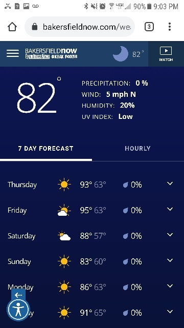

White Space & Clean Design
Twitter, Inc.
Twitter's clean design is exemplified here with simple, to-the-point text with large buttons. A substantial amount of whitespace is left unused, but it suggests a confident, professional introduction to the social media engine.
Contrast
Stack Exchange, Inc.
Stackoverflow is a popular Q&A site, particularly for technical fields. When browsing the home page, the distinctive groupings and colors of each segment makes it immediately clear which text and which buttons go together.
Alignment
Sinclair Broadcast Group, Inc.
https://bakersfieldnow.com/weather

Weather sites such as this one have learned to organize their info into a pleasing array of rows and columns to allow the user to quickly scan for the information they need.